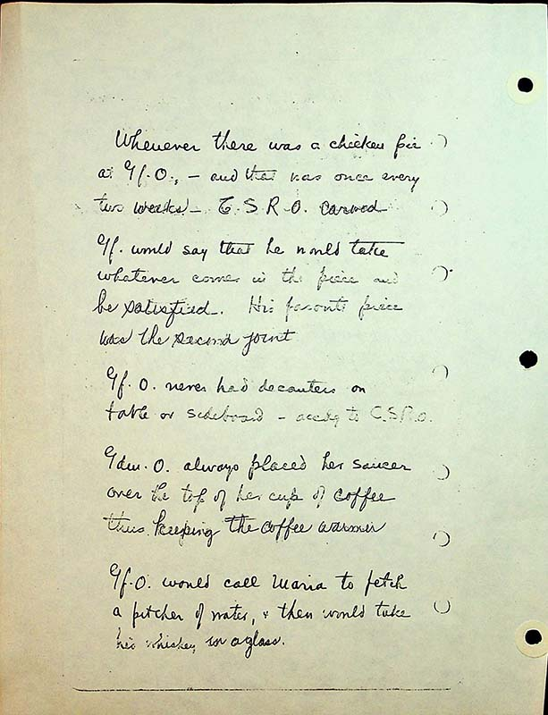

Whenever there was a chicken pie at at Gf O- and that was once every two weeks- CSRO carved.
Gf would say that he would take whatever comes in the piece and be satisfied. His favorite piece was the second joint.
Gf O never had decanters ont eh table or sideboard -accdg to CSRO
Gdm O always placed her saucer over the top of her cup of coffee thus keeping the coffee warmer
Gf O would call Maria to fetch a pitcher of water, & then would take his whiskey in a glass.